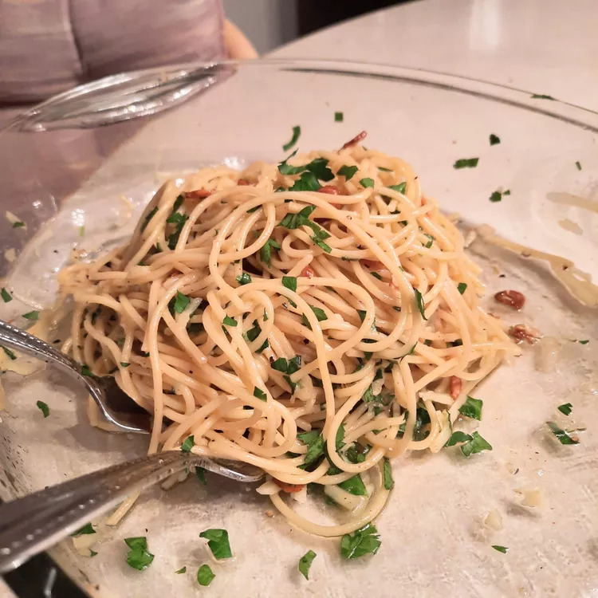

Spaghetti Aglio e Olio

No two aglio e olio recipes are alike, but this one is pretty true to the classic method.
The key is slowly toasting the garlic slices to a perfect golden brown
in the olive oil. If it's too light, you don't get the full flavor and if it's too dark it
gets bitter. My advice? Do it perfectly.
Ingredients
- 1 pound uncooked spaghetti
- 1/2 cup olive oil
- 6 cloves garlic, thinly sliced
- 1/4 teaspoon red pepper flakes, or to taste
- salt and freshly ground black pepper to taste
- 1/4 cup chopped fresh italian parsley
- 1 cup finely grated Parmigiano-Reggiano cheese
Directions
- Bring a large pot of lightly salted water to a boil. Cook spaghetti in the boiling
water, stirring occasionally until cooked through but firm to the bite, about 10
to 12 minutes. Drain and transfer to a pasta bowl.
- While the pasta is cooking, combine olive oil and garlic in a cold skillet.
Cook over medium heat to slowly toast garlic, about 10 minutes. Reduce heat to
medium-low when olive oil begins to bubble. Cook and stir until garlic is
golden brown, about another 5 minutes. Remove from heat.
- Stir red pepper flakes, salt, and black pepper into pasta. Pour in hot olive oil
and garlic, and sprinkle on Italian parsley and half of the Parmigiano-Reggiano
cheese; toss until combined.
- Serve pasta topped with the remaining Parmigiano-Reggiano cheese.
Nutrition Facts per serving
- 755 Calories
- 35g Fat
- 87g Carbs
- 23g Protein
Related Recipes